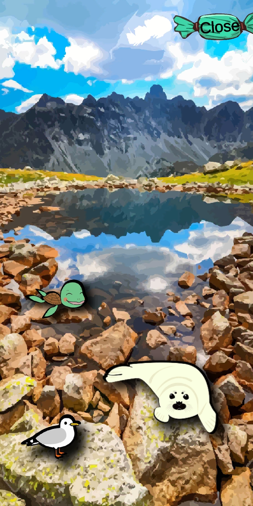
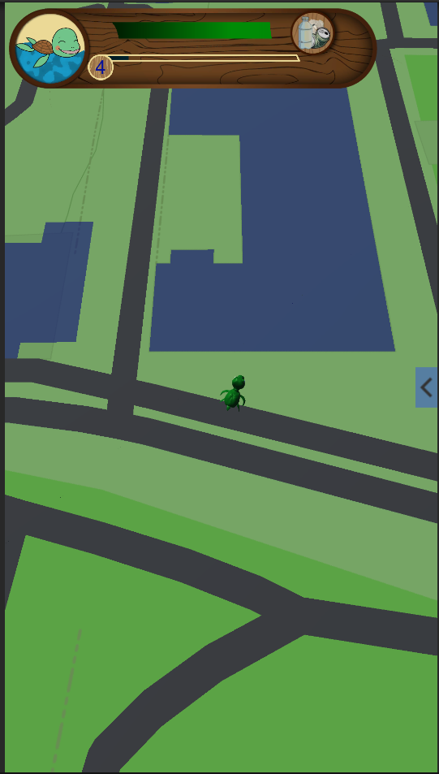
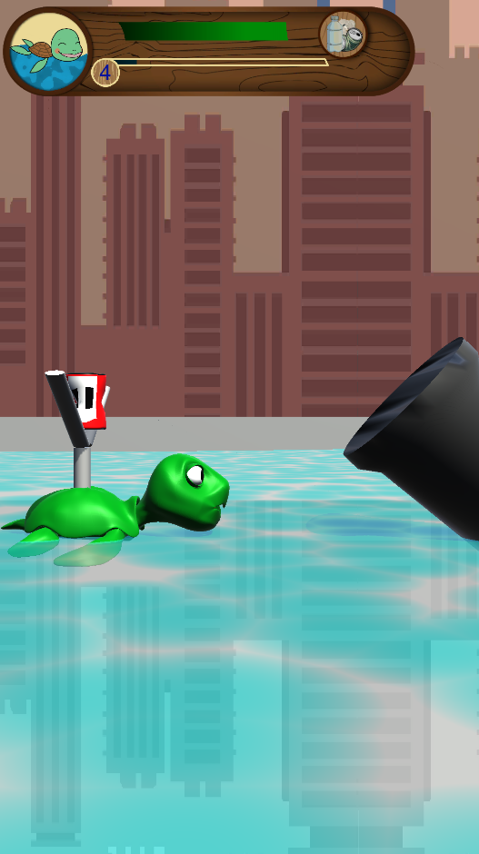

Plastic Catastrophe
A game where the player helps animals clean up the environment, it is meant to bring awareness to pollution and littering.
A game where the player helps animals clean up the environment, it is meant to bring awareness to pollution and littering.
This was a team project made during my study at the Hanzehogeschool, the goal of the project was to raise the awareness of plastic pollution.
Since plastic waste decomposes very slowly and tons of it eventually ends up in bodies of water, our main focus was on nature in and around water.
The group that made the game consisted of 7 people: 3 artists, 2 designers and 2 programmers.
In this project I took the role of programmer, working mostly on the GPS map, minigames, character selection & leveling, Item spawning and the pollution system.
The game is made for mobile devices, it makes use of GPS to synchronise the virtual world to the player's location in real-life.
In the game the player can pick between 3 different animals: the Turtle, Seal, and Seagull, the chosen animal represents the player on the map and becomes the current helper.

The character select screen with the different characters the player can choose.
Different kinds of litter appear in the virtual world as the player moves around, tapping a piece of litter will start a minigame to collect it.
Successfully completing a collection minigame will add a piece of litter to the player's inventory to be recycled, it also lowers the pollution score and gives experience to the current helper animal.
Helper animals can be leveled up by gaining experience to give them more energy to pick up litter, and the collected litter can be recycled to craft helpful perks for the animals.

A screenshot of the map, the map and GPS system were made in unity using the Mapbox Unity package.

The turtle's litter collection game: every animal has its own minigame to collect litter.
In the case of the turtle, the player needs to shoot the piece of litter from a slingshot into the collection bin.
The functions below manage the character switching and data. The Character is set by the SetChar function, this function will start by saving the data from the previous character and loading de data for the new one.
It also calculates fow much time has passed since the new animal was last used to determine the amount of energy the animal has recovered, as well the amount of health the animal has based on its level.
At the end SpawnCharacter funtion is called, this function removes the previous animal model and replaces it with the chosen animal.
//sets the selected character based on character's ID value;
public void SetChar(int CharID){
System.DateTime epochStart = new System.DateTime(1970, 1, 1, 0, 0, 0, System.DateTimeKind.Utc);
if (CurrentChar.Name != "")
{
CurrentChar.LastUsed = (int)(System.DateTime.UtcNow - epochStart).TotalSeconds;
SaveSystem.SaveAnimalData(CurrentChar);
}
CurrentChar = GameManager.Instance.CharList[CharID];
//looks for a save for the animal, if not found, creates a new, default one.
if (SaveSystem.LoadAnimalData(CurrentChar) == null)
{
Debug.Log("Creating new save for character ID: " + CurrentChar.ID + " Name: " + CurrentChar.Name + "");
CurrentChar.NextLevelReq = CurrentChar.BaseLevelReq;
SaveSystem.SaveAnimalData(CurrentChar);
}else
{
//loads save data
AnimalSaveData data = SaveSystem.LoadAnimalData(CurrentChar);
//sets loaded values
SetPerk(data.Perk, false);
CurrentChar.Name = data.Name;
CurrentChar.Level = data.Level;
CurrentChar.Exp = data.Exp;
CurrentChar.NextLevelReq = data.NextLevelReq;
CurrentChar.Energy = data.Energy;
CurrentChar.LastUsed = data.TimeStamp;
for (int i = 0; i < data.PerksUnlocked.Length; i++)
{
CurrentChar.PerkList[i].Unlocked = data.PerksUnlocked[i];
}
if (CurrentChar.CurrentPerk != null && CurrentChar.CurrentPerk.modifier == PerkModifiers.EnergyModifier)
{
maxHealth = Mathf.CeilToInt((100 + (CurrentChar.Level * 5)) * CurrentChar.CurrentPerk.value);
}
else
{
maxHealth = 100 + (CurrentChar.Level * 5);
}
//adds more energy that recharged over time
if (data.TimeStamp != 0)
{
Debug.Log(((((float)(System.DateTime.UtcNow - epochStart).TotalSeconds - data.TimeStamp) / 60) / 60) * 8);
if (CurrentChar.CurrentPerk != null && CurrentChar.CurrentPerk.modifier == PerkModifiers.EnergyRecoveryModifier)
{
CurrentChar.Energy += (((((float)(System.DateTime.UtcNow - epochStart).TotalSeconds - data.TimeStamp) / 60) / 60) * 8) * CurrentChar.CurrentPerk.value;
}
else
{
CurrentChar.Energy += ((((float)(System.DateTime.UtcNow - epochStart).TotalSeconds - data.TimeStamp) / 60) /60) * 8;
}
if (CurrentChar.Energy > maxHealth)
{
CurrentChar.Energy = maxHealth;
}
}
UpdateMaxhealth();
Updatehealth();
currentXP = CurrentChar.Exp;
}
xp.SetMaxXP(CurrentChar.NextLevelReq);
xp.SetXP(CurrentChar.Exp);
Portrait.sprite = CurrentChar.Portrait;
SpawnCharacter();
}
//Spawns character and removes the previous one.
void SpawnCharacter(bool ClearPrevious = true)
{
if (ClearPrevious)
{
foreach (Transform child in CharContainer.transform)
{
Destroy(child.gameObject);
}
}
Instantiate(CurrentChar.Prefab, CharContainer.transform);
}